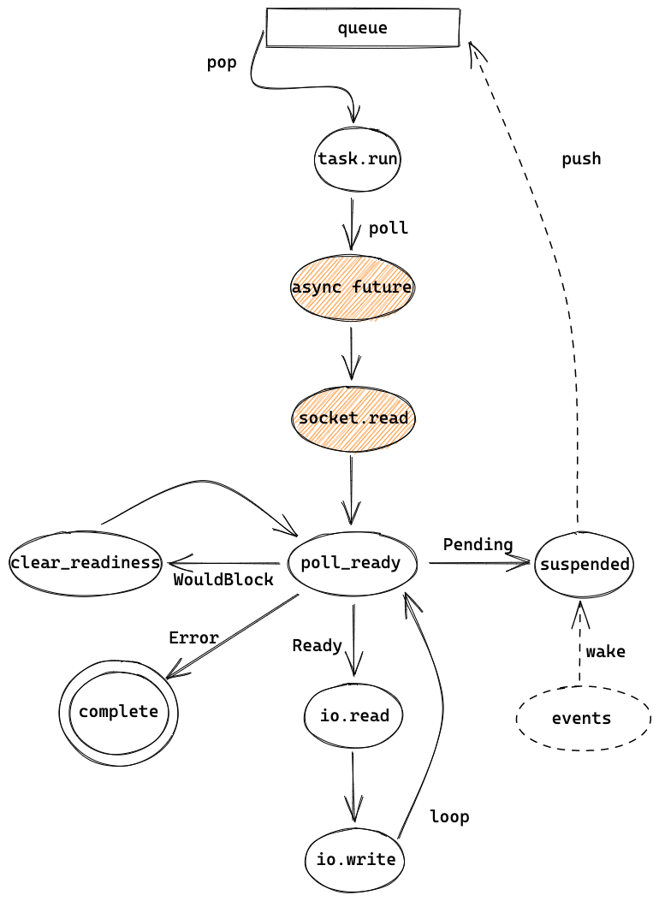

worker 线程 - 运行 task
worker 线程执行 task
让我们回到之前的 echo example：
#![allow(unused)] fn main() { let (mut socket, _) = listener.accept().await?; tokio::spawn(async move { // ... }) }
之前讲过，当 worker 线程收到 event 后会唤醒主线程，主线程通过 tokio::spawn 创建一个 task，并放到 worker 线程的队列中，然后通过 TOKEN_WAKEUP 唤醒 worker 线程。worker 线程这时开始执行 task，来看一下执行的入口函数 self.run_task(task, core)：
#![allow(unused)] fn main() { coop::budget(|| { task.run(); loop { let task = match core.lifo_slot.take() { Some(task) => task, None => return Ok(core), }; if coop::has_budget_remaining() { *self.core.borrow_mut() = Some(core); task.run(); } else { core.run_queue.push_back(task, self.worker.inject()); return Ok(core); } } }) }
coop 是用来尽量让 task 调度公平的一个模块，暂时先不用关注，之后会在 3.2 单独讲。抛开调度相关的，这段代码主要就是执行 task(task.run())，执行之后会继续执行其他 task 或者返回。task.run() 很简单：
#![allow(unused)] fn main() { self.0.raw.poll(); mem::forget(self); }
task 在之前初始化时用 Box 创建被分配在了堆上，所以这里调用完了 poll 之后，通过 mem::forget 把 task 给“忽略”掉，于是这里返回的时候就不会 destruct task。这样是因为，如果 task poll 返回了 Poll::Ready 就表示这个 task 直接结束了，这时可以删掉，但如果返回了 Poll::Pending，则需要把 task 挂起并等到事件唤醒这个 task，如果 task 被重新放在队列中，就会产生没有必要的 poll。因此 tokio 这里选择了把 task 分配在 heap 上并自己管理 task 的生命周期。
poll 的实际执行，会通过动态调用，调用 harness 的 poll，然后一层层往里边调：
#![allow(unused)] fn main() { let harness = Harness::<T, S>::from_raw(ptr); harness.poll(); -------------------------------- // harness.poll(): match self.poll_inner() { // ... other results PollFuture::Complete(out, is_join_interested) => { self.complete(out, is_join_interested); } PollFuture::None => (), } -------------------------------- // self.poll_inner: let waker_ref = waker_ref::<T, S>(self.header()); let cx = Context::from_waker(&*waker_ref); // important poll_future(self.header(), &self.core().stage, snapshot, cx) -------------------------------- // poll_future: let guard = Guard { core }; let res = guard.core.poll(cx); match res { Ok(Poll::Pending) => PollFuture::None, Ok(Poll::Ready(ok)) => PollFuture::Complete(Ok(ok), snapshot.is_join_interested()), } -------------------------------- // guard.core.poll(cx): let future = unsafe { Pin::new_unchecked(future) }; future.poll(&mut cx) }
这里调了多个函数，但最核心逻辑是通过 waker_ref 创建 Context，并用它来执行实际的 future（future.poll）。
Harness 可以简单理解为对实际 task 的简单封装，对于 task 的 poll 是通过 Harness 而不是直接 poll task 自身。如果 future 返回 Pending， poll_inner 就返回 PollFuture::None，然后 harness.poll() 也就返回。如果 future 返回 Ready， poll_inner 就返回 PollFuture::Complete，然后在 harness.complete 中会完成对 task 的清理工作。这里细节较多，先不展开。
task future 运行
在 echo 例子中，worker 线程执行的 future 就是 echo 代码中的 async block：
#![allow(unused)] fn main() { async move { let mut buf = vec![0; 1024]; loop { let n = socket.read(&mut buf).await .expect("failed to read data from socket"); ... } }
socket.read 返回的是 tokio::io::util::Read，于是 .await 会调用 Read 的 poll：
#![allow(unused)] fn main() { let mut buf = ReadBuf::new(*me.buf); ready!(Pin::new(me.reader).poll_read(cx, &mut buf))?; Poll::Ready(Ok(buf.filled().len())) }
其中的 poll_read 是 AsyncRead trait 的方法，在这里调用的是 socket (TcpStream) 实现的 poll_read：
#![allow(unused)] fn main() { // poll_read: unsafe { self.io.poll_read(cx, buf) } -------------------------------- // https://github.com/tokio-rs/tokio/blob/a5ee2f0d3d78daa01e2c6c12d22b82474dc5c32a/tokio/src/io/poll_evented.rs#L150 // self.io.poll_read: let n = ready!(self.registration.poll_read_io(cx, || { let b = &mut *(buf.unfilled_mut() as *mut [std::mem::MaybeUninit<u8>] as *mut [u8]); self.io.as_ref().unwrap().read(b) }))?; buf.assume_init(n); buf.advance(n); Poll::Ready(Ok(())) }
ready! 是 tokio 中定义的一个很简单 macro，如果传入值是 Ready，就继续，如果是 Pending，就直接 return，于是实际调用的是 self.registration.poll_read_io 。
之前讲过， TcpStream 在初始化时会像 TcpListener 一样注册 io，但 TcpListener accept 用的是 registration.async_io，TcpStream 用的是 registration.poll_io。这两个方法很像，不过async_io 是 async 的，会一直等到 ready 后读了数据才返回，而 poll_io 是同步的，当有数据时和 async_io 一样会读数据并返回，但没有数据时就会返回 Pending。 poll_io 主要是给 AsyncRead 和 AsyncWrite 用的，是同步的，如果需要把 AsyncRead 变成异步调用，可以调用 AsyncReadExt 的 read，TcpStream 的 read(&mut buf).await 就是这么用的。
下边 poll_read_io 代码，和之前 registration.async_io 的代码非常相似：
#![allow(unused)] fn main() { loop { let ev = ready!(self.poll_ready(cx, Direction::Read))?; match f() { Ok(ret) => { return Poll::Ready(Ok(ret)); } Err(ref e) if e.kind() == io::ErrorKind::WouldBlock => { self.clear_readiness(ev); } Err(e) => return Poll::Ready(Err(e)), } } }
其中的poll_ready 会调用到 Readiness 的 poll_readiness，和 async_io 中调用的 Readiness 的 poll 也很像。不过他们有一个比较大的不同，后者会用一个 LinkedList 来保存 waiters，当事件到来时，会调用 waiters 中所有的 wake，但前者只用了一个字段来存，当有事件时，只会唤醒最新的一个 waiter。所以后者更适合用在同时有多个任务等待时，而前者则适合用在其他场景，比如 echo example 中的 read。TcpStream 的 poll_read_ready 文档中也说：
This function is intended for cases where creating and pinning a future via
readableis not feasible. Where possible, usingreadableis preferred, as this supports polling from multiple tasks at once.
如果 poll_ready 返回 Pending，比如新连接刚建立，但还没有数据到来时，就会向上返回到之前的 harness poll，task.run() 也执行结束。但这并不代表 task 的代码执行完了，相反 task 只是被挂起了。然后 worker 会继续执行其他 tasks，如果没有 task 可以执行，就又进入到等待 event 中。
worker 线程被唤醒继续执行 task
当 worker(reactor) 线程收到 event 时，就像 2.4 中讲的，会 dispatch 事件。这时的 waker 是在之前 harness.poll 里设置的：
#![allow(unused)] fn main() { // self.poll_inner: let waker_ref = waker_ref::<T, S>(self.header()); let cx = Context::from_waker(&*waker_ref); }
来看 waker 的代码：
#![allow(unused)] fn main() { // https://github.com/tokio-rs/tokio/blob/a5ee2f0d3d78daa01e2c6c12d22b82474dc5c32a/tokio/src/runtime/task/waker.rs#L78 let ptr = NonNull::new_unchecked(ptr as *mut Header); let harness = Harness::<T, S>::from_raw(ptr); if harness.header().state.transition_to_notified() { harness.core().scheduler.schedule(Notified(harness.to_task())); } ------------------------------------- // self.core().scheduler.schedule: // https://github.com/tokio-rs/tokio/blob/a5ee2f0d3d78daa01e2c6c12d22b82474dc5c32a/tokio/src/runtime/thread_pool/worker.rs#L721 CURRENT.with(|maybe_cx| { if let Some(cx) = maybe_cx { // Make sure the task is part of the **current** scheduler. if self.ptr_eq(&cx.worker.shared) { // And the current thread still holds a core if let Some(core) = cx.core.borrow_mut().as_mut() { self.schedule_local(core, task, is_yield); return; } } } // Otherwise, use the inject queue self.inject.push(task); self.notify_parked(); }); }
这里把 task 的指针还原成 Harness 后，再重新调度它，scheduler.schedule 就是之前 tokio::spawn 里调用的同一个方法，不过逻辑不太一样。如果这时的线程和之前的线程相同的话，且 Context 和 shared 数据都是之前都一样，那么会执行 schedule_local 来把 task 调度到当前的 worker，这样可以更好地利用缓存。
worker 线程被唤醒后，会继续从之前 socket.read().await 的地方开始执行，也就是执行 Read 的 poll 方法，然后又执行到了 poll_read_io :
#![allow(unused)] fn main() { loop { let ev = ready!(self.poll_ready(cx, direction))?; match f() { Ok(ret) => { return Poll::Ready(Ok(ret)); } } } }
这时，poll_ready 返回的是 Poll::Ready(Ok(event))，于是就继续执行 f() ，也就是之前传的 lambda，会从 TcpStream 中读取数据，并填充到 echo example 中创建的 buffer 中。
#![allow(unused)] fn main() { // https://github.com/tokio-rs/tokio/blob/a5ee2f0d3d78daa01e2c6c12d22b82474dc5c32a/tokio/src/io/poll_evented.rs#L150 // f(): // let n = ready!(self.registration.poll_read_io(cx, || { let b = &mut *(buf.unfilled_mut() as *mut [std::mem::MaybeUninit<u8>] as *mut [u8]); self.io.as_ref().unwrap().read(b) // }))?; ----------------------------------- // read(b): // https://github.com/tokio-rs/mio/blob/b7006d710821f1d6aa0d5a63948dc21b4433ddbf/src/net/tcp/stream.rs#L186 impl<'a> Read for &'a TcpStream { fn read(&mut self, buf: &mut [u8]) -> io::Result<usize> { self.inner.do_io(|inner| (&*inner).read(buf)) } } }
最后写数据给 TCP client：
#![allow(unused)] fn main() { socket.write_all(&buf[0..n]).await .expect("failed to write data to socket"); }
写数据和之前读数据的过程是类似的，不过值得注意的是，一般情况下，当收到新连接的时候，TcpStream 已经变成可写的状态了，因此这里直接就可以写数据了，不需要再等待事件了。
当写完数据后，又执行 loop。读数据时，因为 tokio 用的是边缘触发，所以此时依然是可读状态，但在 f() 中实际读数据时，会返回 WouldBlock，于是这里会调用 clear_readiness 来清除可读状态。
#![allow(unused)] fn main() { loop { let ev = ready!(self.poll_ready(cx, direction))?; match f() { Err(ref e) if e.kind() == io::ErrorKind::WouldBlock => { self.clear_readiness(ev); } Err(e) => return Poll::Ready(Err(e)), } } }
再次 poll_ready 就和之前一样返回 Pending，于是又被挂起，之后等待 event。
最后，当 client 关闭连接时，又会收到 event，此时再读数据，返回 error，读到的 size 为 0，这个 async block 就返回了，然后 harness 的 poll 就回收 task 的数据并返回，于是这个 task 的处理就完全结束了，然后 worker 线程继续循环处理其他 task 或者 park。
总结
这章主要讲了以 echo example 为例的 task 的执行过程，从 queue 中取出 task 后，开始执行 task。通过 poll ready 来判断 socket 是否 ready，ready 时就继续读或者写，pending 时就挂起，直到最后完成 task 的处理，task 也被销毁。
 link
至此，我们就讲完了 echo example 以及相关的 tokio runtime 的代码。